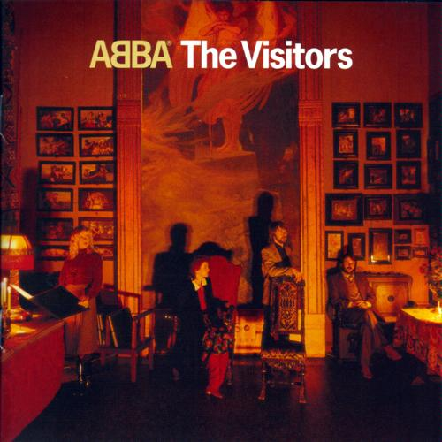

Perfect Pop #2: ABBA - The Visitors
It’s widely accepted that ABBA is one of the top five best selling artists in the history of popular music. In 2006, the Swedish quartet’s total career sales were estimated at a startling 370 million. The band’s most successful release, the 1992 greatest hits compilation ABBA Gold, has shifted an impressive 28 millions units on its own. These are impressive figures, which continue to increase year on year thanks to projects like 2008’s Mamma Mia! (the 5th highest grossing film of 2008 and most successful screen musical ever made, no less).
ABBA has sold so many records and occupies such a prominent place in popular culture that it’s virtually impossible to avoid the band and its songs. Such success and ubiquity tends to polarise opinion, of course. For every embarrassing dad who sang along to Mamma Mia! in the cinema, there’s another ‘serious’ music fan who disparagingly regards ABBA as a lightweight and horribly dated commercial act. I know this because I used to be that ‘serious’ music fan, who listened exclusively to ‘proper’ music and thought that pop music was a joke. I know, I know.
The watershed moment for me came in 2002, when I sat down with my girlfriend to watch Lukas Moodysson’s excellent comedy Together (Tilsammans). The film’s uplifting finale is soundtracked by ABBA’s 1975 hit S.O.S., and hearing this wonderful song in that exact context was a revelation for me. Over the course of a few minutes, from those melancholic minor chords to that euphoric chorus, my views on ABBA shifted and my stance on pop music softened.
ABBA released eight studio albums in a ten year career, debuting with 1973’s Ring Ring and signing off with 1981’s The Visitors. For a band that made its name (and fortune) with a string of radio-friendly pop smashes, The Visitors is a surprisingly challenging and sophisticated work. However, when you consider that it is essentially the work of two recently divorced couples, obliged by their profession to spend long periods of time together in a high-pressure studio environment, those unfamiliar dark tones start to make much more sense.
The Visitors certainly has its flaws (I’m not a big fan of Two For The Price Of One, for example) but it’s still comfortably my favourite ABBA record. I consider it a very good album rather than a truly great one, but it does feature one of the band’s best ever songs in its glorious title track, The Visitors.
The Visitors is arguably ABBA’s most sonically ambitious composition. The first two minutes of the song signal such a significant departure from the group’s classic sound that many listeners at the time must have had to stop the turntable to check that this was definitely an ABBA record and not some obscure psych-prog offering.
The verse features a heavily processed Ani-Frid Lyngstad singing about panic, fear, and secret meetings over pulses of synthesizer and psychedelic swirls of sound. The tension mounts until 2:11, when a crash cymbal announces the arrival of a relatively understated chorus by ABBA's standards. At 2:40 this gives way to gloriously pompous synth-driven instrumental break, and then we’re back to the verse and the song’s titular visitors, who have come to take away and ‘break’ our narrator just in time for the finale.
The song’s lyrics are vague enough to be open to interpretation – in my mind's eye I'm seeing Stasi officers from 2006 film The Lives of Others (Das Leben der Anderen) – but Björn Ulvaeus has claimed that it is about the treatment of dissidents in the Soviet Union at the time. And you thought you knew ABBA? Think again.
If you’re interested in sophisticated pop music with distinctly adult themes (divorce, the loss of innocence, Soviet oppression in the Cold War era) then I would recommend giving the The Visitors a listen. If you think you can only stomach one new ABBA song at time, make it The Visitors. You’ll be coming back for more before you know it.
13 March, 2011 - 16:05 — David Coleman